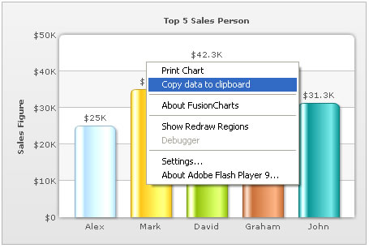

Exporting Chart Data > Using Context Menu |
||||||||||||
FusionCharts allows you to export data from your charts in CSV format. The export of data can be triggered in two ways:
Let's study both of them one by one. |
||||||||||||
| Setting up the chart to export data from context menu | ||||||||||||
| To allow export of data using context menu, you need to specify the following in XML: | ||||||||||||
<chart yAxisName='Sales Figure' caption='Top 5 Sales Person' numberPrefix='$' useRoundEdges='1' showExportDataMenuItem='1'> |
||||||||||||
| As soon as showExportDataMenuItem='1' is set in the chart, a new item is added to the chart's context menu, as shown below: | ||||||||||||
|  | ||||||||||||
The label of this menu item can be customized by setting: <chart ... exportDataMenuItemLabel='Copy the data of this chart' ...> When you select this item, the data of this chart will be copied to your clipboard. If you open any text editor and paste the content of the clipboard, you'll get something as under: |
||||||||||||
| "Label","Sales Figure" "Alex","25000" "Mark","35000" "David","42300" "Graham","35300" "John","31300" |
||||||||||||
| This is basically the CSV representation of your chart's data. In case of multi-series charts, the data will have more columns (one for each dataset). Let us next see how to format the output CSV data using various export related XML attributes that FusionCharts exposes. | ||||||||||||
| Customizing the output CSV format | ||||||||||||
You can customize the following aspects of the output CSV data:
The following attributes help in configuring this: |
||||||||||||
|
||||||||||||
| Output CSV data format for multi-series/stacked/combination charts | ||||||||||||
| XML specified for the chart: | ||||||||||||
<chart caption='Country Comparison' shownames='1' showvalues='0' decimals='0' numberPrefix='$' showExportDataMenuItem='1'> |
||||||||||||
| Corresponding CSV output: | ||||||||||||
| "Label","1996","1997","1998" "Austria","25601.34","57401.85","45000.65" "Brazil","20148.82","41941.19","44835.76" "France","17372.76","45263.37","18722.18" "Germany","35407.15","117320.16","77557.31" "USA","38105.68","114845.27","92633.68" |
||||||||||||
Here, since the XML didn't specify xAxisName attribute, "Label" has been put in CSV data as title for x-axis labels. The first line then contains series names of all the datasets present in the XML. Thereafter, each line of data first contains the x-axis label (category label) and value of each of those datasets for this label. In the next section, we'll see how to access this data using JavaScript API. |